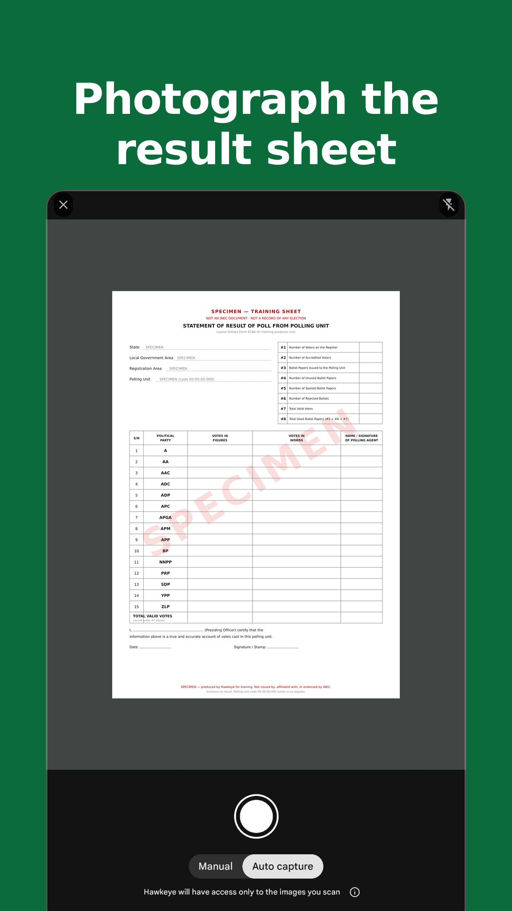
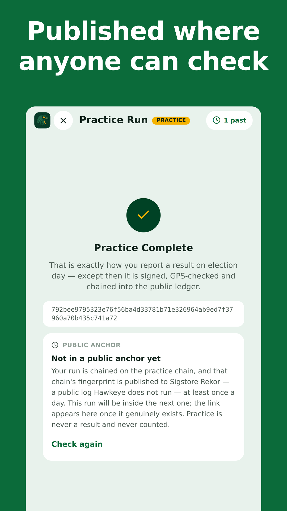
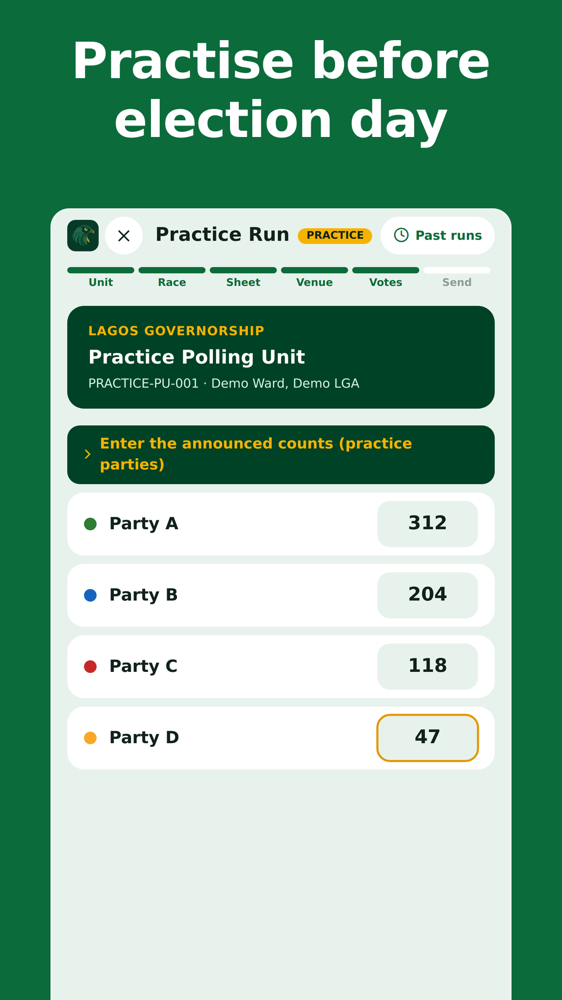

Press Kit
What Hawkeye is, how it works, the key dates, and files you can use in your reporting.
In brief
Hawkeye is a free, open-source app that lets any Nigerian at a polling unit photograph the result sheet (Form EC8A) announced there and add it to a public record anyone can check. Reports from the same unit are compared with each other and with the copy INEC uploads to its IReV portal, so agreement, or a mismatch, is visible to all. Hawkeye is independent and nonpartisan: it does not declare results, it is not a rival count, and it is not affiliated with INEC or any party or candidate.
Key facts
- What it is
- A free app for citizens to photograph and report the result announced at their polling unit, and compare it with INEC's IReV.
- Available on
- Hawkeye and Hawkeye Lite for Android and iPhone, and on the web at hawkeye.com.ng. Get the app →
- Cost
- Free. No advertising.
- Code
- Open source on GitHub, with an open verifier library anyone can run.
- Languages
- English, Hausa, Igbo and Yorùbá.
- Polling units
- All 176,846 on INEC's register can be reported.
- Affiliation
- Independent and nonpartisan. Not affiliated with INEC or any party or candidate. Official results are those declared by INEC.
- Run by
- IniXien Hope Initiative, a Nigerian non-profit (registration in progress). Its sister company, IniXien, LLC, grants it perpetual free use of Hawkeye.
How it works
Photograph the sheet. At the polling unit, an observer photographs the announced result sheet and the venue in the app. Photos are taken live and GPS-stamped; gallery uploads are not accepted.
Sign and record. The report is signed on the observer's own phone, with a key Hawkeye never holds, and added to a public record that cannot be quietly edited.
Compare in the open. Reports from the same unit are compared with each other and with INEC's own sheet on IReV. A count is marked verified only when independent observers agree, and a disagreement is shown, never hidden.
Check it yourself
Public ledger. Every report is chained to the one before it, and the ledger's fingerprint is published in Sigstore Rekor, an independent public log Hawkeye does not run. Anyone can re-check it in the browser, with no account.
Photo privacy. Result sheets are public, as INEC posts them at the unit. Photos of the venue, which can show voters, are never published. Phone numbers are stored only as one-way hashes.
Nonpartisan. Hawkeye declares no winners and backs no party or candidate. It takes no political money and carries no advertising.
Key dates
- National Practice Day. Observers across Nigeria run the same mock election, 08:00–18:00 WAT. Practice is never counted as a result.
- National Practice Day. A final run, one week before the vote.
- Presidential and National Assembly elections.
- Governorship and State House of Assembly elections.
Election dates are set by INEC. Check inecnigeria.org for any change.
How much data does it use?
For parties and groups budgeting mobile data for polling-unit agents on 16 January. The figures are per agent.
| Use | Data |
|---|---|
| Reporting the Presidential, Senate and House results only | About 2 MBAbout 0.4 MB of compressed photos per report, plus retries. |
| Reporting, plus checking results a few times (2–3 hours with the app open) | About 10–15 MB |
| Heavy use: following results and maps all evening | About 30–50 MB |
Each optional incident report with video |
1–12 MB per video in the Hawkeye app; up to 25 MB per video in Hawkeye Lite or a browser. At most 2 videos per report. |
Our advice: a 100 MB bundle per agent covers the day with a wide margin. 50 MB is enough for reporting plus moderate checking.
Before the day, on Wi-Fi: install the app, do a practice run, and let the offline polling-unit list download.
- Why so little: every photo is compressed on the phone before it is sent, and the Hawkeye app stops refreshing when it is in the background.
- Reporting from a web browser instead of an app also downloads about 7 MB of sheet-reading tools the first time. The apps don't need them.
- These are estimates from lab measurements. We will measure them again on the National Practice Day, 12 December 2026, and update this page.
Downloads
You are welcome to use these files when reporting on Hawkeye.
App icon


Screenshots
From the app store listing, 1080 × 1920 PNG. They show a specimen sheet and practice mode, not real results. Tap an image to download it.

Photograph the result sheet 
Published where anyone can check 
Practise before election day


Press contact
For interviews and questions, email info@hawkeye.com.ng or call +234 907 872 7777.
Try it yourself. A practice run needs no sign-up, and nothing you enter is published.
Recruiting observers? The Stay for the count page has a WhatsApp message and printable flyers in four languages.